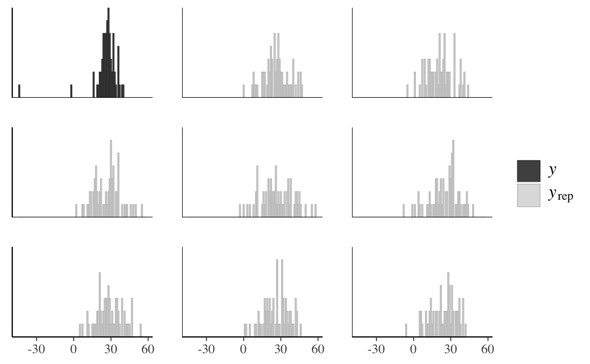
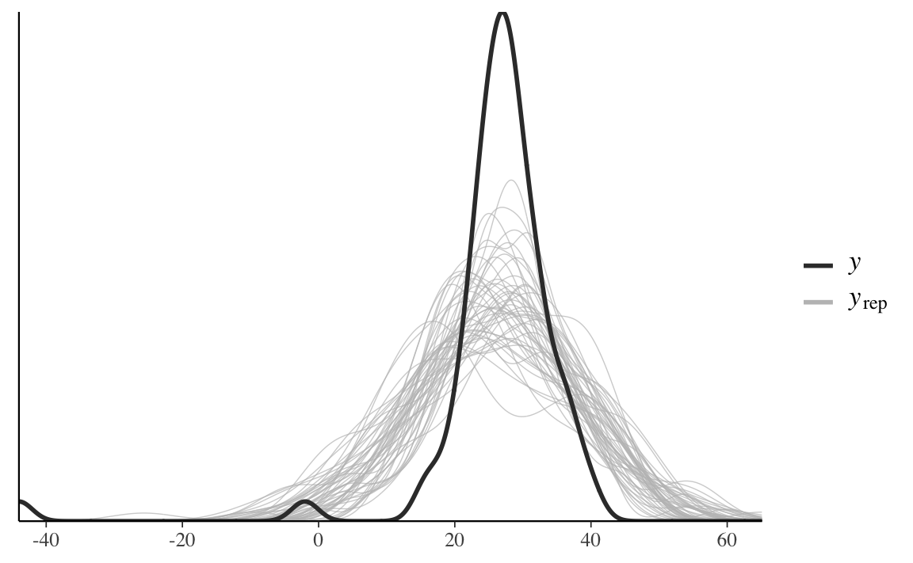
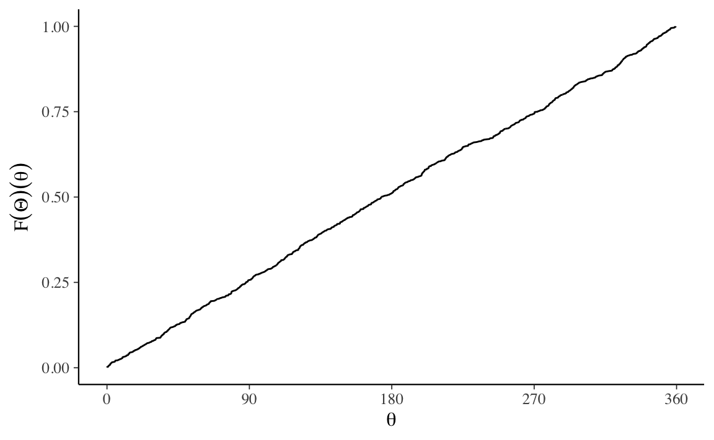

2.4 Posterior predictive checks
La distribuzione predittiva a posteriori viene utilizzata per eseguire i cosiddetti controlli predittivi a posteriori (Posterior Predictive Checks, PPC). Ricordiamo che la distribuzione predittiva a posteriori corrisponde alla simulazione di un campione di dati generati utilizzando le proprietà del modello adattato. Nei PPC si realizza un confronto grafico tra \(p(y^{rep} \mid y)\) e i dati osservati \(y\). Confrontando visivamente gli aspetti chiave dei dati previsti futuri \(y^{rep}\) e dei dati osservati \(y\) possiamo determinare se il modello è adeguato.
Oltre al confronto tra le distribuzioni \(p(y)\) e \(p(y^{rep})\) è anche possibile un confronto tra la distribuzione di varie statistiche descrittive, i cui valori sono calcolati su diversi campioni \(y^{rep}\), e le corrispondenti statistiche descrittive calcolate sui dati osservati. Vengono solitamente considerate statistiche descrittive quali la media, la varianza, la deviazione standard, il minimo o il massimo. Ma confronti di questo tipo sono possibili per qualunque statistica descrittiva. Questi confronti sono chiamati PPC.
Esercizio 2.2 Esaminiamo ora un set di dati che non seguono la distribuzione normale (Gelman, Hill, and Vehtari 2020). I dati corrispondono ad una serie di misurazioni prese da Simon Newcomb nel 1882 come parte di un esperimento per stimare la velocità della luce. A questi dati verrà (inappropriatamente) adattata una distribuzione normale. L’obiettivo dell’esempio è quello di mostrare come i PPC possono rivelare la mancanza di adattamento di un modello ai dati.
I PPC mostrano che il modo più semplice per verificare l’adattamento del modello è quello di visualizzare \(y^{rep}\) insieme ai dati effettivi. Iniziamo a caricare i dati:
library("MASS")
data("newcomb")Visualizziamo la distribuzione dei dati con un istogramma:
tibble(newcomb) %>%
ggplot(aes(x = newcomb, after_stat(density))) +
geom_histogram(binwidth = 1)
Creiamo un oggetto di tipo list dove inserire i dati:
data_list <- list(
y = newcomb,
N = length(newcomb)
)Il codice Stan per il modello normale è il seguente:
modelString <- "
data {
int<lower=0> N;
vector[N] y;
}
parameters {
real mu;
real<lower=0> sigma;
}
model {
mu ~ normal(25, 10);
sigma ~ cauchy(0, 10);
y ~ normal(mu, sigma);
}
generated quantities {
vector[N] y_rep;
for (n in 1:N) {
y_rep[n] = normal_rng(mu, sigma);
}
}
"
writeLines(modelString, con = "code/newcomb.stan")Adattando il modello ai dati
file <- file.path("code", "newcomb.stan")
mod <- cmdstan_model(file)
fit <- mod$sample(
data = data_list,
iter_sampling = 4000L,
iter_warmup = 2000L,
seed = SEED,
chains = 4L,
cores = 4L,
refresh = 0,
thin = 1
)otteniamo le seguenti stime dei parametri \(\mu\) e \(\sigma\):
fit$summary(c("mu", "sigma"))
#> # A tibble: 2 × 10
#> variable mean median sd mad q5 q95 rhat ess_bulk ess_tail
#> <chr> <dbl> <dbl> <dbl> <dbl> <dbl> <dbl> <dbl> <dbl> <dbl>
#> 1 mu 26.2 26.2 1.33 1.30 24.0 28.4 1.00 13305. 11189.
#> 2 sigma 10.9 10.8 0.958 0.943 9.40 12.5 1.00 12614. 10352.Trasformiamo fit in un oggetto stanfit:
stanfit <- rstan::read_stan_csv(fit$output_files())La distribuzione a posteriori di \(\mu\) è
mu_draws <- as.matrix(stanfit, pars = "mu")
mcmc_areas(mu_draws, prob = 0.95) # color 95% interval
Confrontiamo \(\mu\) con la media di \(y\):
mean(newcomb)
#> [1] 26.21212Anche se trova la media giusta, il modello non è comunque adeguato a prevedere le altre proprietà della \(y\). Estraiamo \(y^{rep}\) dall’oggetto stanfit:
y_rep <- as.matrix(stanfit, pars = "y_rep")
dim(y_rep)
#> [1] 16000 66I valori y_rep sono i dati della distribuzione predittiva a posteriori che sono stati simulati usando gli stessi valori \(X\) dei predittori utilizzati per adattare il modello. Il confronto tra l’istogramma della \(y\) e gli istogrammi di diversi campioni \(y^{rep}\) mostra una scarsa corrispondenza tra i due:
ppc_hist(data_list$y, y_rep[1:8, ], binwidth = 1)
Alla stessa conclusione si giunge tramite un confronto tra la funzione di densità empirica della \(y\) e quella di diversi campioni \(y^{rep}\):
ppc_dens_overlay(data_list$y, y_rep[1:50, ])
Generiamo ora i PPC per la media e il minimo della distribuzione:
ppc_stat_2d(data_list$y, y_rep, stat = c("mean", "min"))
Mentre la media viene riprodotta accuratamente dal modello (come abbiamo visto sopra), ciò non è vero per il minimo dela distribuzione. L’origine di questa mancanza di adattamento è il fatto che la distribuzione delle misurazioni della velocità della luce è asimmetrica negativa. Dato che ci sono poche osservazioni nella coda negativa della distribuzione, solo per fare un esempio, utilizzeremo ora un secondo modello che ipotizza una distribuzione \(t\) di Student:
modelString <- "
data {
int<lower=0> N;
vector[N] y;
}
parameters {
real mu;
real<lower=0> sigma;
real<lower=0> nu;
}
model {
mu ~ normal(25, 10);
sigma ~ cauchy(0, 10);
nu ~ cauchy(0, 10);
y ~ student_t(nu, mu, sigma);
}
generated quantities {
vector[N] y_rep;
for (n in 1:N) {
y_rep[n] = student_t_rng(nu, mu, sigma);
}
}
"
writeLines(modelString, con = "code/newcomb2.stan")Adattiamo questo secondo modello ai dati.
file <- file.path("code", "newcomb2.stan")
mod <- cmdstan_model(file)
fit <- mod$sample(
data = data_list,
iter_sampling = 4000L,
iter_warmup = 2000L,
seed = SEED,
chains = 4L,
cores = 4L,
parallel_chains = 2L,
refresh = 0,
thin = 1
)
#> Running MCMC with 4 parallel chains...
#>
#> Chain 1 finished in 0.3 seconds.
#> Chain 2 finished in 0.3 seconds.
#> Chain 3 finished in 0.3 seconds.
#> Chain 4 finished in 0.3 seconds.
#>
#> All 4 chains finished successfully.
#> Mean chain execution time: 0.3 seconds.
#> Total execution time: 0.4 seconds.Per questo secondo modello il confronto tra la funzione di densità empirica della \(y\) e quella di diversi campioni \(y^{rep}\) risulta adeguato:
stanfit <- rstan::read_stan_csv(fit$output_files())
y_rep <- as.matrix(stanfit, pars = "y_rep")
ppc_dens_overlay(data_list$y, y_rep[1:50, ])Inoltre, anche la statistica “minimo della distribuzione” viene ben predetta dal modello.
ppc_stat_2d(data_list$y, y_rep, stat = c("mean", "min"))
In conclusione, per le misurazioni della velocità della luce di Newcomb l’accuratezza predittiva del modello basato sulla distribuzione \(t\) di Student è chiaramente migliore di quella del modello normale.